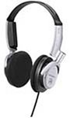

« ラン | メイン | なんとなく似てる »
2005年02月14日
MDR-NC6

を買っ（てもらっ）た。
SONY製のノイズキャンセリングヘッドホン。
この手の商品としては比較的廉価な製品で$100を大幅に切る。
スティーブ・ジョブスは iPod があれば日本-アメリカ間ずっと違う曲を聴き続けられるぜ、とか言っているけども飛行機の中は相当うるさくて音楽を聞くのも映画をみるのもなかなかままならない。
耳栓をしてからヘッドホンをしてみたりとかバカなことをやってみたけども（あたりまえだけども）まともに聞こえないので結局音量をでかくしたり、聞かなかったりしていた。
ノイズキャンセリングヘッドホンがかなり雑音を低減してくれるということで空港にはこの手の商品がいろいろならんでいるけれどもブランドものはなかなか高いので手を出しかねていた。
以前ヨドバシカメラでも探したんだけど安くても１万円強してしまう。
ところがこの前近所のSony Style(リアル店舗）でこれを発見。
バレンタインのプレゼントにと奥様に無理矢理おねだりしてゲット！
デザインはソニーらしくカッコイイみかけ。周囲の音の逆位相の波をぶつけるため、左右にマイクが埋め込まれているわけだけれどもこれがうまくデザインにとけ込んでいてごっつくない。
パッドは耳に完全に覆い被さるのではなく平べったりスポンジがまんべんなく耳に当たるタイプ。アームの伸び縮みも細かく調整できてかけ心地は良好。
ノイズキャンセリングに必要な電源は単四電池１本、アルカリ電池で30時間、マンガン電池で15時間と大変経済的。
ニッケル水素の充電池でも10〜20時間くらいはもつのかな？
キャリングポーチや飛行機ようのアダプタが付属しているのもうれしいところ。
さて、電源をオン！
「ｽｰｰｰｰｰｰｰｰｰｰｰｰｰｰ」
ん、ちょっとホワイトノイズが聞こえるぞ？？奥様のサイバーショットから奪った電池の充電が足りないのかな？
調べてみると静かなところではそういうもんだとのこと。電車や飛行機で効果を発揮するらしい。まぁあたりまえか？
というわけで飛行機、電車に乗るのが楽しみになりました。
投稿者 yusuke : 2005年02月14日 22:40
トラックバック
このエントリーのトラックバックURL:
http://yusuke.homeip.net/diary/mt/mt-tb.cgi/183
コメント
アチャアチャ！ アクチャリ～ シュアシュアシュア！アクチャリ～、アチャ。。。
って騒音がすぐ側にあるじゃん。
投稿者 danny : 2005年02月14日 23:14
確かに！
隣のインド人が騒ぎ出したらスイッチいれてみまーす。
投稿者 裕介 : 2005年02月15日 09:33
人間の騒音あたりの帯域はあまりカットしてくれないんですよね、こういう製品て・・・
投稿者 にはる : 2005年02月17日 18:16
たしかに人間の声はあんま消えないですね。わざとそこらへんの周波数はスルーしてるのかな？
でもオフィスのなんだかずーっとうるさい換気音？やマシンのファンの音が消えてスッキリ。
投稿者 裕介 : 2005年02月22日 09:56